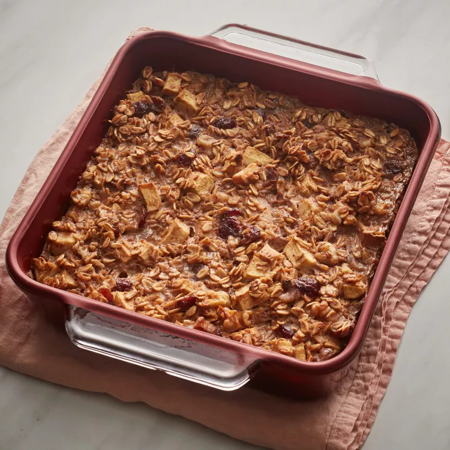

Baked Cranberry Oatmeal

Ingredients:->
- 1 ½ cups milk
- 3 tablespoons brown sugar
- 1 teaspoon ground cinnamon
- ¼ teaspoon ground nutmeg
- ¼ teaspoon ground cloves
- ¾ cup rolled oats
- ¾ cup chopped apples
- ⅓ cup dried cranberries
- ⅓ cup chopped walnuts, or as desired
Directions->
- Preheat oven to 350 degrees F (175 degrees C). Grease an 8x8-inch baking dish.
- Bring milk, brown sugar, cinnamon, nutmeg, and cloves to a boil in a saucepan; remove from heat. Combine oats, apples, dried cranberries, and walnuts in a bowl; transfer to the prepared baking dish. Pour milk mixture over oat mixture.
- Bake in the preheated oven until lightly browned, 30 to 35 minutes.
The Baked Cranberry Oatmeal is ready to be served!